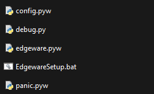

We’re going to start from the absolute basics here, and assume you’ve never heard of Edgeware or Edgeware++. Edgeware++ is essentially a “porn delivery service” which takes images, video, audio, and text from a “pack” and places it in popups all over your screen. Creators can make special .zip files for people by using the included pack creation tools, and share them with others who use the program.
The idea behind Edgeware++ is to simulate a “virus program” that spams you with images while you’re using your computer. You can set Edgeware++ up to be idle and passive to allow you to multitask while using it, or aggressive and constant if you just want to watch it while you do “totally wholesome activities”. While its concept was based on old computer viruses, Edgeware++ won’t do any actual harm to your computer unless you explicitly tell it to do so. There are a few settings that allow you to fill your hard drive and replace images, but they’re off by default and are very clearly marked as potentially dangerous. Also, this is a program meant to be fetishistic, but there isn’t really any hard requirement for packs to be lewd… maybe you want mechanics to pop up during a raid, or something to occasionally remind you of things you need to do? In any case, let’s get to work on running it for your first time!
Edgeware++ is run through a few files all found in the “edgeware” folder, the same place you found the installer. We’ll go through them more in detail later, but to briefly summarize them now:
In short: run config to change your settings, run edgeware.pyw to start the program, and run panic when you want to quit! If you have any issues at any time, run debug to see what’s causing the problem.
Now that we know how to properly start and stop Edgeware++, let’s work on the first step to getting it working: importing a pack! As briefly touched upon earlier, packs are essentially the “media collections” that Edgeware++ pulls from to run. Every time a popup spawns, the program goes into the selected pack and randomly chooses a file to display. Without a pack, Edgeware++ will be almost completely useless!
But where do you get packs? I don’t really want to link to any external sites in the tutorial for both logistical and potential security reasons, but on the official Edgeware++ github there’s a few good resources! We not only host some packs that me, Marigold, and other contributors have worked on, but also link to some other places you can potentially find them! There’s even a SFW Edgeware++ demo pack which is specifically designed to be lightweight and test-ready… and no porn, so you won’t get distracted~ (Just know that it’s a bit old and might not have the newest features included!)
Once you’ve found a pack, you’ll notice it’s a .zip file! No need to extract it or anything, just save it in your location of choice. From there you’ll need to use the big “Import Pack” button at the bottom of the window, which will cause a popup to spawn:
There are two ways to import a pack: by adding it to the saved packs directory, or directly changing the default pack. “Import New” extracts and adds the pack to edgeware/data/packs, allowing you to easily switch to it at any time via the “Switch Pack” button on the config window. “Change Default” saves the pack to edgeware/resource, overwriting anything already there, and labels it as “default”.
Importing new packs is the recommended way to use Edgeware++, and is a new feature for this expanded version. Packs can take a long time to import if they’re large enough, and making them all available at once drastically cuts down on the time to switch between them. The reason you’d use default over importing new packs is to make Edgeware++ portable or have a smaller filesize. Whenever you import a new pack, it is copied into the packs folder rather than moved, so if you want to save on filesize you’d have to delete the original .zip files afterwards.
To summarize:
If you’re not quite sure what category you fall into, “Import New” is the safest bet. Choose the pack’s .zip file, and load it in!
Once you’ve loaded in the pack, you technically have done all you need to do to get Edgeware++ running. Congratulations! Hit “Save & Exit” at the bottom if you want to run edgeware.pyw and test it out.
But what about all of these settings? Why are the popups so fast? Can I disable the desktop icons from appearing? The pack said something about “Corruption”, what’s that?... Well, if you want to know more, feel free to keep reading in further sections of the tutorial!